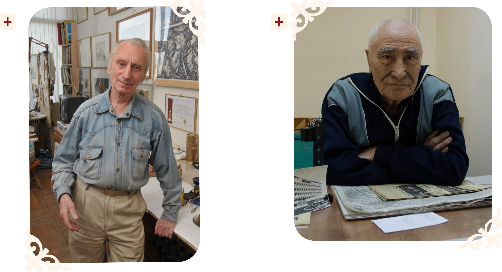

Архитектура
Цирк Алматы это яркий образец советского модернизма, построенный в 1972 году по проекту архитекторов Владимира Кацева и Арыстана Кайнарбаева.
Архитекторы

Цирк Алматы это яркий образец советского модернизма, построенный в 1972 году по проекту архитекторов Владимира Кацева и Арыстана Кайнарбаева.
